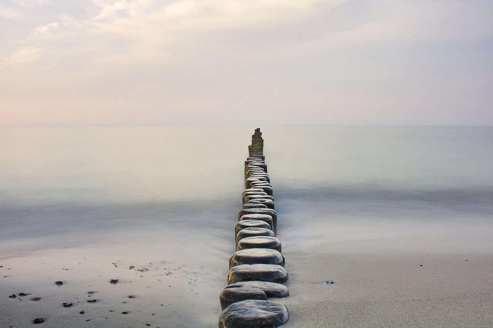

<title>Long Exposure</title>
<meta name="claude:viewport-fit-sides" content="cover">
<link rel="preconnect" href="https://fonts.googleapis.com">
<link rel="preconnect" href="https://fonts.gstatic.com" crossorigin>
<link rel="stylesheet" href="https://fonts.googleapis.com/css2?family=Geist:wght@300;400;500&family=Geist+Mono:wght@400&display=swap">
<style>
/* Layout: one photograph you steady by holding still, then a short quiet page on the far side.
   Single committed look (mist and ink), set explicitly so it reads the same on any host theme. */
:root{
  --mist:#e9ebea; --stone:#c9cdcc; --ink:#1f2629; --ink-soft:#59636a; --line:#1f2629;
  --sans:"Geist",system-ui,-apple-system,"Segoe UI",sans-serif;
  --mono:"Geist Mono",ui-monospace,"Cascadia Mono",Consolas,monospace;
  --p:0; /* 0 = restless, 1 = still */
  color-scheme:light;
}
html,body{background:var(--mist);color:var(--ink)}
body{font:16px/1.6 var(--sans);font-weight:300}
.stage{position:relative;height:100svh;min-height:520px;overflow:hidden;background:var(--stone);touch-action:none;user-select:none;-webkit-user-select:none;cursor:pointer}
.stage img{position:absolute;inset:-4%;width:108%;height:108%;object-fit:cover;max-width:none;will-change:transform,filter,opacity}
.base{filter:blur(calc((1 - var(--p)) * 14px)) saturate(calc(.55 + var(--p) * .45));transform:scale(calc(1.06 - var(--p) * .06))}
.ghost{opacity:calc((1 - var(--p)) * .38);filter:blur(calc((1 - var(--p)) * 20px))}
.g1{transform:translateX(calc((1 - var(--p)) * -6%)) scale(1.06);animation:drift 7s ease-in-out infinite alternate}
.g2{transform:translateX(calc((1 - var(--p)) * 6%)) scale(1.06);animation:drift 9s ease-in-out infinite alternate-reverse}
@keyframes drift{to{translate:2% 0}}
.veil{position:absolute;inset:0;background:var(--mist);opacity:calc(.28 - var(--p) * .28);pointer-events:none}
.prompt,.name{position:absolute;left:0;right:0;text-align:center;padding-left:max(16px,env(safe-area-inset-left,0px));padding-right:max(16px,env(safe-area-inset-right,0px));pointer-events:none}
.prompt{top:28%;transition:opacity .6s ease}
.prompt p{margin:0;font:400 12px/1.6 var(--mono);letter-spacing:.32em;text-transform:uppercase;color:var(--ink)}
.prompt small{display:block;margin-top:10px;font:300 14px/1.5 var(--sans);letter-spacing:.02em;color:var(--ink-soft)}
.name{top:20%;opacity:0;transition:opacity 1.6s ease .2s}
.name h1{margin:0;font-weight:300;font-size:clamp(26px,4.4vw,52px);letter-spacing:.42em;text-indent:.42em;text-transform:uppercase}
.name p{margin:14px 0 0;font-size:clamp(14px,1.6vw,17px);color:var(--ink-soft)}
.horizon{position:absolute;left:0;bottom:calc(9% + env(safe-area-inset-bottom,0px));height:1px;width:100%;background:var(--line);transform-origin:center;transform:scaleX(var(--p));opacity:.7}
.count{position:absolute;right:max(16px,env(safe-area-inset-right,0px));bottom:calc(9% + 10px + env(safe-area-inset-bottom,0px));font:400 11px/1 var(--mono);letter-spacing:.18em;color:var(--ink);opacity:calc(var(--p) * 1.4);font-variant-numeric:tabular-nums}
.skip{position:absolute;left:max(16px,env(safe-area-inset-left,0px));bottom:calc(16px + env(safe-area-inset-bottom,0px));font:400 11px/1 var(--mono);letter-spacing:.18em;text-transform:uppercase;color:var(--ink-soft);background:none;border:0;padding:10px 0;cursor:pointer}
.skip:focus-visible,.stage:focus-visible{outline:2px solid var(--ink);outline-offset:-6px}
.sea{position:absolute;inset:0;width:100%;height:100%;object-fit:cover;max-width:none;opacity:0;transition:opacity 2.6s ease;pointer-events:none}
.stage.open .sea{opacity:1}
.stage.open .horizon,.stage.open .count{opacity:0;transition:opacity 2s ease}
.stage.open .base,.stage.open .ghost{opacity:0;transition:opacity 2.6s ease}
.stage.clear{cursor:default}
.stage.clear .prompt{opacity:0}
.stage.clear .name{opacity:1}
.stage.clear .skip{visibility:hidden}
.stage.clear .skip.motion{visibility:visible}

.far{max-width:640px;margin:0 auto;padding-left:max(16px,env(safe-area-inset-left,0px));padding-right:max(16px,env(safe-area-inset-right,0px));padding-block:96px 72px;display:grid;gap:56px}
.label{font:400 11px/1 var(--mono);letter-spacing:.24em;text-transform:uppercase;color:var(--ink-soft);margin:0 0 18px}
.lead{font-size:clamp(22px,2.6vw,28px);line-height:1.4;font-weight:300;margin:0;text-wrap:balance}
.draft{font:400 11px/1 var(--mono);letter-spacing:.12em;color:var(--ink-soft);margin-top:12px}
.work{list-style:none;margin:0;padding:0;border-top:1px solid var(--stone)}
.work li{display:grid;grid-template-columns:minmax(0,1fr) auto;gap:4px 16px;padding:18px 0;border-bottom:1px solid var(--stone)}
.work b{font-weight:400}
.work span{color:var(--ink-soft);font-size:14px}
.work em{font:400 11px/1.9 var(--mono);font-style:normal;letter-spacing:.14em;text-transform:uppercase;color:var(--ink-soft);grid-row:span 2;align-self:center;text-align:right}
.work a{color:inherit}
.still{width:100%;aspect-ratio:3/2;max-width:100%;object-fit:cover;display:block}
.foot{display:flex;flex-wrap:wrap;justify-content:space-between;gap:8px 24px;font-size:13px;color:var(--ink-soft)}
.foot a{color:inherit}
@media (prefers-reduced-motion:reduce){.g1,.g2{animation:none}.prompt,.name{transition:none}}
</style>

<section class="stage" id="stage" tabindex="0" role="button" aria-label="Press and hold to steady the photograph. Space or Enter also works." aria-describedby="hint">
  
  
  
  <video class="sea" id="sea" muted loop playsinline preload="none" aria-hidden="true"></video>
  <div class="veil"></div>
  <div class="prompt" id="hint"><p>Press and hold</p><small>Be still. It settles.</small></div>
  <div class="horizon" aria-hidden="true"></div>
  <div class="count" id="count" aria-hidden="true">0.0 s</div>
  <div class="name"><h1>Darius Tatum</h1><p>Calm, steady software for everyday life.</p></div>
  <button class="skip" id="skip" type="button">Show it still</button>
  <button class="skip motion" id="motion" type="button" hidden>Pause the sea</button>
</section>

<main class="far" id="far">
  <section>
    <p class="label">On the far side</p>
    <p class="lead">After the hardest stretch of my life, I changed course. Now I make small, calm tools for the moments that are hard to sit through.</p>
    <p class="draft">Draft line for Darius to rewrite in his own words.</p>
  </section>
  
  <section>
    <p class="label">Work</p>
    <ul class="work">
      <li><b><a href="https://urgewalk.app/" target="_blank" rel="noopener">Urge Walk</a></b><em>December 2026</em><span>Ride out an urge with a short walk, a breath or a few senses. iPhone, in development.</span></li>
      <li><b>A fitness app</b><em>Planning</em><span>Early days.</span></li>
      <li><b>A Christian game for all ages</b><em>Planning</em><span>Early days.</span></li>
    </ul>
  </section>
  <footer class="foot">
    <span>hello@example.com</span>
    <span>Photographs and film from Pixabay: DBU_DirektesSehen, the1willy, ambivalent- (4K original)</span>
  </footer>
</main>

<script>
(() => {
  const stage = document.getElementById("stage"), count = document.getElementById("count"), root = document.documentElement;
  const FILL = 4.2, FADE = 9;           // seconds to settle while held; seconds to drift back when released
  let p = 0, held = 0, holding = false, clear = false, last = 0, raf = 0;
  const set = v => { p = Math.max(0, Math.min(1, v)); root.style.setProperty("--p", p.toFixed(4)); };
  function tick(t){
    const dt = last ? Math.min(.05, (t - last) / 1000) : 0; last = t;
    if (holding){ held += dt; set(p + dt / FILL); count.textContent = held.toFixed(1) + " s"; }
    else if (!clear){ set(p - dt / FADE); }
    if (p >= 1 && !clear){ settle(); }
    if (!clear && (holding || p > 0)) raf = requestAnimationFrame(tick); else { raf = 0; last = 0; }
  }
  function start(){ if (clear) return; holding = true; if (!raf){ last = 0; raf = requestAnimationFrame(tick); } }
  function stop(){ holding = false; if (!raf && !clear && p > 0){ last = 0; raf = requestAnimationFrame(tick); } }
  const sea = document.getElementById("sea"), motionBtn = document.getElementById("motion");
  // Footage cut from the 4K original: a tall loop for phones, a wide one for everything else.
  // Reduce Motion, Save-Data or a 2G connection get the still frame and a Play button instead.
  const conn = navigator.connection || {};
  const still = matchMedia("(prefers-reduced-motion: reduce)").matches || !!conn.saveData || /(^|-)2g$/.test(conn.effectiveType || "");
  const tall = innerHeight > innerWidth;
  sea.poster = tall ? "sea-tall.jpg" : "sea-wide.jpg";
  sea.src = tall ? "sea-tall.mp4" : "sea-wide.mp4";
  if (!still) sea.preload = "auto";
  function playSea(){ sea.playbackRate = .8; const r = sea.play(); if (r && r.catch) r.catch(() => {}); motionBtn.textContent = "Pause the sea"; }
  function settle(){
    clear = true; holding = false; set(1); stage.classList.add("clear");
    stage.removeAttribute("role"); stage.setAttribute("aria-label", "The photograph, now still, opening onto a misty sea");
    // A beat of stillness, then the long exposure opens into the living sea.
    setTimeout(() => {
      stage.classList.add("open"); motionBtn.hidden = false;
      if (still){ motionBtn.textContent = "Play the sea"; } else { playSea(); }
    }, 1400);
  }
  motionBtn.addEventListener("click", () => { if (sea.paused) playSea(); else { sea.pause(); motionBtn.textContent = "Play the sea"; } });
  stage.addEventListener("pointerdown", e => { if (e.target.closest("button")) return; stage.setPointerCapture?.(e.pointerId); start(); });
  ["pointerup", "pointercancel", "lostpointercapture"].forEach(n => stage.addEventListener(n, stop));
  stage.addEventListener("keydown", e => { if ((e.key === " " || e.key === "Enter") && !e.repeat && e.target === stage){ e.preventDefault(); start(); } });
  stage.addEventListener("keyup", e => { if (e.key === " " || e.key === "Enter") stop(); });
  stage.addEventListener("contextmenu", e => e.preventDefault());
  document.getElementById("skip").addEventListener("click", () => settle());
})();
</script>
